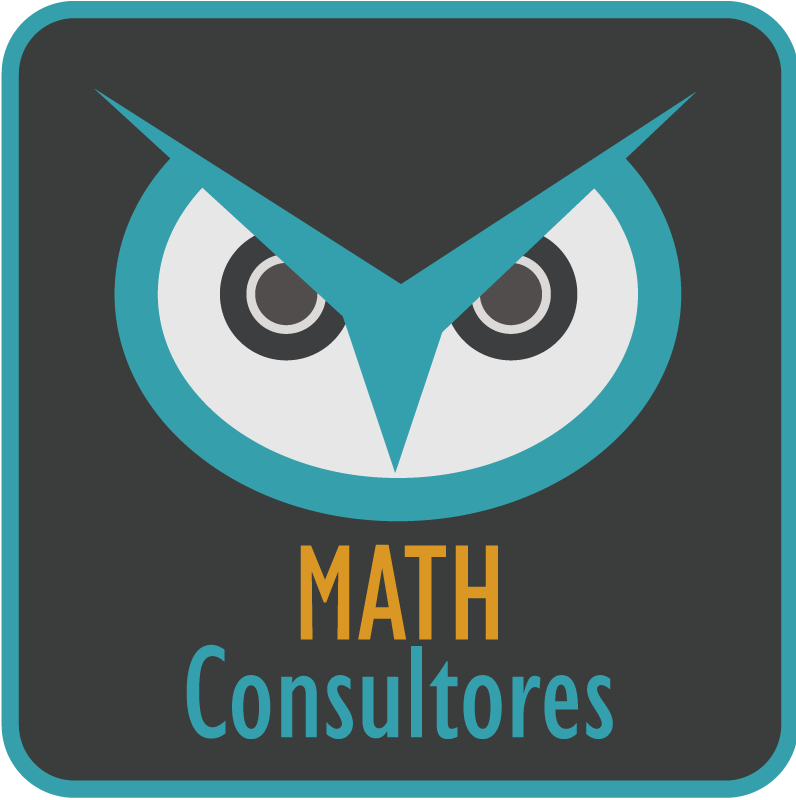

Cristian Pachacama S.
Statistics & Operational Research
- Quito - Ecuador
- cristian.pachacama01@gmail.com
- cristianpachacama.github.io
Mi principal área de estudio es la estadística y el Análisis de Datos, tengo por objetivo convertirme en un científico de datos, para ello he tratado de
complementar mis estudios de Matemática y estadística con los del uso de diferentes herramientas de software y lenguajes de programación.
En un principio enfoqué mis esfuerzos en aprender el lenguaje R atravez de la interface Rstudio, allí adquirí varias destrezas para el tratamiento, modelamiento
y visualización de datos.
En la actualidad me encuentro adquiriendo conocimientos en el uso del lenguaje de programación Python (por su flexibilidad y rendimiento en la extracción de datos),
ya que he encontrado un sin número de ventajas en la utilización conjunta de R y Python específicamente en Machine Learning y en Big Data, ambos temas que son
la prioridad del Análisis de Datos en la actualidad.
En el futuro planeo especializarme en la Estadística Bayesiana y su uso en redes bayesianas (análogas a las redes neuronales), un campo aún por explorar tanto a nivel teórico,
así como en sus posibles aplicaciones.
MATH Consultores Ecuador
Investigación, consultoría y asesoramiento en áreas afines a la matemática
Escuela Politécnica Nacional
Proyecto de Investigación: Forecast and Impact of extreme low levels of streamflow in hydropower plants.
Petroamazonas EP
Programación y Ejecución de Costos
Escuela Politécnica Nacional (EPN), Quito-EC
Ingeniería Matemática - Estadística e Investigación de Operaciones
Colegio Fernando Ortiz Crespo, Quito-EC
Bachiller en Ciencias Generales
Empresa Pública YACHAY EP
“Introducción a la Analítica de Datos”
Departamento de Matemática de la Escuela Politécnica Nacional.
“XV Encuentro de Matemática y sus Aplicaciones”(link)
Centro de Modelización Matemática MODEMAT, Escuela Politécnica Nacional
EPN, Núcleo Milenio.
“II Escuela Latinoamericana de Algoritmos” (link)
Servicio Nacional de Contratación Pública (SERCOP)
“Gestión Integral de Datos Masivos para la transparencia Pública”
Red Ecuatoriana de Universidades de Escuelas Politécnicas para Investigación y Posgrados
(REDU) y Escuela Politécnica Nacional
(EPN).
Diseño Experimental y Análisis Estadístico
COURSERA
Introducción a Data Science:Programación Estadística con R (link)
COURSERA
Programación para Todos: Introducción a PYTHON (link)
COURSERA
Programación para Todos: Data Structures in PYTHON (link)
COURSERA
Usando PYTHON para acceder a los Datos Web (link)
Rsource Stat Lab, los cursos son dictados por profesores de la EPN como el Ing. Diego Huaraca.
“R Intermedio”
Idioma Nativo.
Centro de Educación Continua de la Escuela Politécnica Nacional (CEC-EPN)
“Suficiencia en el idioma Inglés”
Instituto de Idiomas de la Escuela Politécnica del Ejercito (Idiomas ESPE)
“Suficiencia en el idioma Inglés”